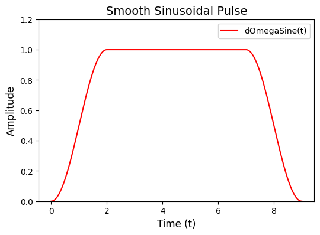
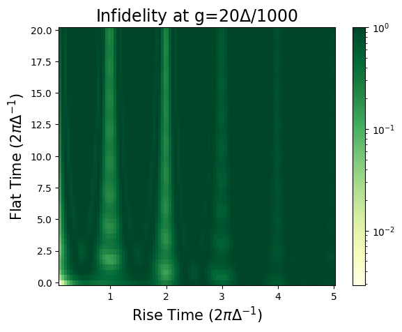

[1]:
import quanguru as qg
import numpy as np
from scipy.integrate import quad
import scipy.linalg as linA
import scipy.sparse as sp
import platform
from matplotlib.colors import LogNorm
from matplotlib import pyplot as plt
19 - Jaynes-Cummings Unitary Fidelity with Smooth Control Pulse#
The Jaynes-Cummings Hamiltonian is written as
\(H_{JC} = \hbar\omega_{c} a^{\dagger}a + \frac{1}{2}\hbar\omega_{q}\sigma_{z} + \hbar g(a^{\dagger}\sigma_{-} + a\sigma_{+})\)
where \(\sigma_{\pm} = (\sigma_{x} \pm i\sigma_{y})/2\) are raising/lowering operators for a two-level system, \(\sigma_{\mu}\) are the Pauli spin operators with \(\mu\in\{x,y,z\}\), \(a^{\dagger}\) and \(a\) are the creation and annihilation operators for the field mode, and \(\omega_{c}\), \(\omega_{q}\), and \(g\) are the cavity-field, qubit, and coupling (angular-) frequencies, respectively.
Here, we will evaluate the unitary evolution of a JC system under a smooth sinusoidal pulse and compare the fidelity of using this pulse with an ideal square pulse.
We will use the below parameters in our simulation
[2]:
# parameters for the Hamiltonian
coef = 2*np.pi # coefficient to convert frequency into angular frequency
delta = 1.0*coef # cavity-qubit detuning
g = 20*delta/1000 # coupling strength
wq = 0 # qubit frequency
wc = wq + delta # cavity frequency
cavDim = 100 # cavity dimension
# parameters for the evolution
stepCount = 100 # step count
and we can describe the JC-Hamiltonian/system in QuanGuru as
[3]:
# Qubit for the JC model
QubitJC = qg.Qubit(frequency=wq, alias='qubit')
# Cavity for the JC model
CavityJC = qg.Cavity(frequency=wc, dimension=cavDim, alias='cavity')
# JC model consists of a qubit and cavity
JCSystem = QubitJC + CavityJC
JCSystem.alias = "JCSystem"
We define a custom createUnitary function (cUJC) that returns the analytic Jaynes–Cummings step unitary (qg.UJC) to avoid repeated exponentiations and reduced computational overhead, expecially for large cavity dimensions.
[4]:
# This captures all the physics of the JC Model and does not require the coupling terms to be defined
def cUJC(self, collapseOps = None, decayRates = None):
kwargs = {
"wq": self.getByNameOrAlias('qubit').frequency,
"wc": self.getByNameOrAlias('cavity').frequency,
"g": g,
"t": self.simulation.stepSize,
"dimC": self.getByNameOrAlias('cavity').dimension
}
return qg.UJC(sparse=True, **kwargs)
The core of this approach is using the Identity matrix as the initial state. This makes the evolved “state” equal to the accumulated total unitary after the simulation.
[5]:
# Simulation Parameters
JCSystem.protocols[0].createUnitary = cUJC
JCSystem.initialState = qg.identity(JCSystem.dimension)
We define the shape and paramters of our smooth sinusoidal pulse (dOmegaSine) with:
Quadratic-sine ramp up (0 → A) over tr
Flat top of duration tf at amplitude A
Symmetric ramp down (A → 0) over tr
[6]:
# Smooth sinusoidal pulse
def dOmegaSine(t,A,tr,tf):
"""
Parameters
t - float, array of floats
the time input of the function
A - float
the max amplitude of the pulse
tr - float
the rising and falling time of the trapezoidal pulse
tf - float
the duration for which the pulse sits at max amplitude (flat duration)
"""
if t<tr:
return A * np.sin(np.pi*t/(2*tr))*np.sin(np.pi*t/(2*tr))
elif t<tr+tf:
return A
else:
return A * np.sin(np.pi*(t-tf)/(2*tr))*np.sin(np.pi*(t-tf)/(2*tr))
[7]:
# Plotting the dOmegaSine function
# Example parameters for the pulse
A, tr, tf = 1.0, 2.0, 5.0
timeList = np.linspace(0, tr + tf + tr, 1000)
pulseValues = [dOmegaSine(t, A, tr, tf) for t in timeList]
# Plot the function
plt.figure(figsize=(6, 4))
plt.plot(timeList, pulseValues, label='dOmegaSine(t)', color='red')
plt.xlabel('Time (t)', fontsize=12)
plt.ylabel('Amplitude', fontsize=12)
plt.ylim(0, 1.2)
plt.title('Smooth Sinusoidal Pulse', fontsize=14)
plt.legend()
plt.show()

Here we set our parameter’s time-dependency callback function. In this case, the frequency of our qubit follows the dOmegaSine function with a constant term (initial qubit frequency).
qubit.frequency = wq + dOmegaSine(t, amp, tr, tf)
We initiliase auxiliary parameters (amp, tr, tf) in auxDict so that we can perform sweeps with these parameters.
[8]:
# Initial Pulse Parameters
# Since 'tr' and 'tf' are being swept, the value they are set at here does not matter
# Using auxDict to store and manage parameters not inherent to QuantumSystems
QubitJC.auxDict['amp'] = delta # Pulse amplitude
QubitJC.auxDict['tr'] = 0.0 # Rising time
QubitJC.auxDict['tf'] = 0.0 # Flat time
# Defining a suitable timeDependency function using the sinusoidal function
def qubFrequencyTimeDependency(qsys, ti):
qsys.frequency = wq + dOmegaSine(
ti,
qsys.auxDict['amp'],
qsys.auxDict['tr'],
qsys.auxDict['tf'])
JCSystem.getByNameOrAlias('qubit').timeDependency = qubFrequencyTimeDependency
We can now create sweeps with parameters not inherent to QuantumSystem or QTerm objects by first initiliasing them as auxillary parameters in auxDict.
When creating multiple sweeps we can set sweep parameter combinatorial = True so that every combination of the sweep parameters are swept. With this, we can obtain a full parameter-space landscape.
Here, we sweep the rise time (tr) and flat time (tf) of our smooth sinusoidal pulse to map the fidelity landscape of our pulse parameters.
[9]:
### Sweeps
# Sweeping rising time and flat time
trSweep = JCSystem.Sweep.createSweep(
system=QubitJC,
sweepKey='tr',
sweepList=np.linspace(0.1, 5 ,100)
)
tfSweep = JCSystem.Sweep.createSweep(
system=QubitJC,
sweepKey='tf',
sweepList=np.linspace(0, 20, 50),
combinatorial = True
)
We set our simulation time to be the same as the duration of the smooth pulse rise time. This is because the total unitary can be determined from the unitary of the rise time of the pulse. It also reduces the total simulation length.
[10]:
### PreCompute Function
def preCompute(qSim):
# Using the the preCompute function to set the simulation length based on pulse parameters
QubitJC = qSim.getByNameOrAlias("qubit")
qSim.totalTime = QubitJC.auxDict['tr']
qSim.stepCount = stepCount
JCSystem.preCompute = preCompute
Post-Processing: Phase Accumulation and Effective Interaction Time#
To compare the smooth pulse with an ideal square pulse, we need to account for the accumulated phase and determine the effective interaction time. We define a number of functions to accomplish this.
Unitary Fidelity#
The fidelity between two unitary operators \(U_1\) and \(U_2\) is defined as:
where \(d\) is the dimension of the Hilbert space. This metric quantifies how closely the two unitaries agree, with \(F = 1\) indicating perfect agreement.
Phase Accumulation Integral#
The smooth pulse modulates the qubit frequency as:
To track the accumulated phase in the rotating frame, we need the time integral:
The function dOmegaSineInt(t, Ao, tro, tfo) computes this analytically in three segments:
Rise region (\(0 \leq t < t_r\)):
\[\Phi(t) = \frac{A t}{2} - \frac{A t_r}{2\pi} \sin\left(\frac{\pi t}{t_r}\right)\]Flat region (\(t_r \leq t < t_r + t_f\)):
\[\Phi(t) = A(t - t_r) + \frac{A t_r}{2}\]Fall region (\(t \geq t_r + t_f\)):
\[\Phi(t) = A t_f + \frac{A(t - t_f)}{2} - \frac{A t_r}{2\pi} \sin\left(\frac{\pi(t - t_f)}{t_r}\right)\]
Effective Interaction Time via Dyson Series#
For an ideal square pulse with constant amplitude at resonance, the interaction picture Hamiltonian is time-independent. For our smooth pulse, we work in a frame rotating at the cavity frequency and must determine the effective interaction time \(t_{\text{sim}}\) that produces the same unitary evolution.
Using first-order perturbation theory (Dyson series), we compute integrals of the form:
where \(\delta = \omega_c - \omega_q^{(0)}\) is the detuning.
The helper functions:
cosinner(x, Ao, tro, tfo): Returns \(\cos[\delta x - \Phi(x)]\)sinner(x, Ao, tro, tfo): Returns \(\sin[\delta x - \Phi(x)]\)integrator(Ao, tro, tfo, x): Usesscipy.integrate.quadto numerically integrate both functions from 0 to \(x\)
The first component of integrator output gives \(t_{\text{sim}}\), the effective interaction time for the equivalent square pulse comparison.
The vectorization of dOmegaSineInt allows it to accept arrays, improving efficiency when computing over many time points.
[11]:
### Post Processing
# Unitary fidelity function
def jfidelity(op1, op2):
dim = op1.shape[0]
tr = qg.trace(qg.hc(op1)@op2)
return (abs(tr)/dim)**2
# Defines the definite integral of the pulse above between 0 and t
def dOmegaSineInt(t,Ao,tro,tfo):
"""
Parameters
t - float, array of floats
the time input of the function
Ao - float
parameter of the trapezoidal/sinusoidal pulse that defines the max amplitude
tro - float
parameter of the trapezoidal/sinusoidal pulse that defines the rising and falling time pulse
tfo - float
parameter of the trapezoidal/sinusoidal pulse that defines the duration for which the pulse sits at max amplitude
"""
if t<tro:
return Ao*t/2 - Ao*tro*np.sin(np.pi*t/tro)/(2*np.pi)
elif t<tro+tfo:
return Ao*(t-tro) + Ao*tro/2
else:
return Ao*tfo + Ao*(t-tfo)/2 - Ao*tro*np.sin(np.pi*(t-tfo)/tro)/(2*np.pi)
dOmegaSineInt = np.vectorize(dOmegaSineInt)
# Determining the first order coefficients for the Smooth Pulse Dyson Series
def sinner(x,Ao,tro,tfo):
return np.sin(delta*x - dOmegaSineInt(x,Ao,tro,tfo))
def cosinner(x,Ao,tro,tfo):
return np.cos(delta*x - dOmegaSineInt(x,Ao,tro,tfo))
def integrator(Ao,tro,tfo,x):
return quad(cosinner,0,x,args=(Ao,tro,tfo), limit=200)[0], quad(sinner,0,x,args=(Ao,tro,tfo), limit=200)[0]
In our postCompute function we determine the final unitary for our smooth sinusoidal pulse and an ideal square pulse and calculate the fidelity between these unitaries.
Steps:
Retrieve rise-time unitary
Build flat unitary segment at constant amplitude
Use transpose of rise-time unitary for symmetric fall
Apply phase corrections (rotating frame adjustments)
Compute ideal square pulse unitary (same effective interaction time)
Calcualte fidelity
[12]:
### PostCompute Function
def postCompute(qSim):
uSmooth = qSim.protocols[0].currentState
cavdim = qSim.getByNameOrAlias('cavity').dimension
time = 2*qSim.auxDict['tr'] + qSim.auxDict['tf']
# Forms the final unitary by left matrix multiplying the unitary obtained at the end of the rise time with the
# unitary for the flat duration followed by the fall time ( = transpose of rise time unitary)
uSmooth = np.transpose(uSmooth)@qg.UJC(wq+qSim.auxDict['amp'],wc,g,qSim.auxDict['tf'],cavdim,sparse=True)@uSmooth
tsim = integrator(qSim.auxDict['amp'],qSim.auxDict['tr'],qSim.auxDict['tf'], time)[0]
# Compute the unitary of an ideal sqaure pulse
uJC = qg.UJC(wc,wc,g,tsim,cavdim,sparse=True)
# Apply phase correction
integral = dOmegaSineInt(time,qSim.auxDict['amp'],qSim.auxDict['tr'],qSim.auxDict['tf'])
uz = linA.expm(-0.5j*integral*sp.kron(qg.identity(cavdim), qg.sigmaz(), 'csc').toarray() + 1j*wc*time*sp.kron(qg.number(cavdim), qg.identity(2), 'csc').toarray())
uz2 = linA.expm(0.5j*wc*tsim*sp.kron(qg.identity(cavdim), qg.sigmaz(), 'csc').toarray() - 1j*wc*tsim*sp.kron(qg.number(cavdim), qg.identity(2), 'csc').toarray())
uSmooth = uz2@uz@uSmooth
qSim.qRes.resultsDict['JCfidelity'] = jfidelity(uJC,uSmooth)
JCSystem.postCompute = postCompute
IMPORTANT NOTE FOR WINDOWS USERS : MULTI-PROCESSING (p=True) DOES NOT WORK WITH NOTEBOOK
You can use a python script, but you will need to make sure that the critical parts of the code are under if __name__ == "__main__":
[13]:
### Running the Simulation
JCSystem.delStates = True
JCSystem.run(p=(platform.system() != 'Windows'), showProgress=True)
Starting sequential sweep with 5000 parameter combinations...
Simulation Start: 2025-11-30 16:19:10
[████████████████████████████████████████] 100.0% | Est. Finish: 2025-11-30 16:26:35
Simulation completed in 00h 07m 24s
[13]:
[]
[14]:
# Plotting infedility as a function of rise time and flat time
JCfideArray = JCSystem.qRes.resultsDict['JCfidelity']
flatList = np.array(tfSweep.sweepList)
trList = trSweep.sweepList
x, y = np.meshgrid(flatList, trList)
cmap = plt.get_cmap("YlGn")
infidelity = 1 - np.array(JCfideArray)
plt.pcolor(y, x, infidelity, rasterized=True, cmap=cmap, norm=LogNorm(vmin=np.min(infidelity), vmax=1))
plt.xlabel(r'Rise Time ($2\pi\Delta^{-1}$)', fontsize=15)
plt.ylabel(r'Flat Time ($2\pi\Delta^{-1}$)', fontsize=15)
plt.title(r'Infidelity at g=' + str(int(np.round(g*1000/delta))) + r'$\Delta/1000$', fontsize=17)
plt.colorbar()
plt.show()
# qg.saveQResCSV(total_sys.qRes, 'JC Sinusoidal Pulse Sweep', "Test",dateTime=True)

Further Optimisation#
Since we are only simulating the ramp up portion of the pulse, we can improve the efficiency of our code by removing the flat time (tf) combinatorial sweep. Instead we can use a loop in our postCompute function which iterates over the tf values and computes the unitary fidelities.
As of yet, Quanguru does not have the functionality to define combinatorial sweeps in this way. But this may be added in future updates.
[15]:
#Save tf sweep list and remove tfSweep
tfSweepList = tfSweep.sweepList
JCSystem.Sweep.removeSweep(tfSweep)
[16]:
def optimisedPostCompute(qSim):
cavdim = qSim.getByNameOrAlias('cavity').dimension
fidelityList = []
for tf in tfSweepList:
time = 2*qSim.auxDict['tr'] + tf
uSmooth = qSim.protocols[0].currentState
# Forms the final unitary by left matrix multiplying the unitary obtained at the end of the rise time with the
# unitary for the flat duration followed by the fall time ( = transpose of rise time unitary)
uSmooth = np.transpose(uSmooth)@qg.UJC(wq+qSim.auxDict['amp'],wc,g,tf,cavdim,sparse=True)@uSmooth
tsim = integrator(qSim.auxDict['amp'],qSim.auxDict['tr'],tf, time)[0]
# Compute the unitary of an ideal sqaure pulse
uJC = qg.UJC(wc,wc,g,tsim,cavdim,sparse=True)
# Apply phase correction
integral = dOmegaSineInt(time,qSim.auxDict['amp'],qSim.auxDict['tr'],tf)
uz = linA.expm(-0.5j*integral*sp.kron(qg.identity(cavdim), qg.sigmaz(), 'csc').toarray() + 1j*wc*time*sp.kron(qg.number(cavdim), qg.identity(2), 'csc').toarray())
uz2 = linA.expm(0.5j*wc*tsim*sp.kron(qg.identity(cavdim), qg.sigmaz(), 'csc').toarray() - 1j*wc*tsim*sp.kron(qg.number(cavdim), qg.identity(2), 'csc').toarray())
uSmooth = uz2@uz@uSmooth
fidelityList.append(jfidelity(uJC,uSmooth))
qSim.qRes.resultsDict['JCfidelity'] = fidelityList
JCSystem.postCompute = optimisedPostCompute
[17]:
### Running the Simulation again
JCSystem.delStates = True
JCSystem.run(p=(platform.system() != 'Windows'), showProgress=True)
Starting sequential sweep with 100 parameter combinations...
Simulation Start: 2025-11-30 16:26:35
[████████████████████████████████████████] 100.0% | Est. Finish: 2025-11-30 16:27:42
Simulation completed in 00h 01m 06s
[17]:
[]
[18]:
JCfideArray = JCSystem.qRes.resultsDict['JCfidelity']
flatList = np.array(tfSweep.sweepList)
trList = trSweep.sweepList
x, y = np.meshgrid(flatList, trList)
cmap = plt.get_cmap("YlGn")
infidelity = 1 - np.array(JCfideArray)
plt.pcolor(y, x, infidelity, rasterized=True, cmap=cmap, norm=LogNorm(vmin=np.min(infidelity), vmax=1))
plt.xlabel(r'Rise Time ($2\pi\Delta^{-1}$)', fontsize=15)
plt.ylabel(r'Flat Time ($2\pi\Delta^{-1}$)', fontsize=15)
plt.title(r'Infidelity at g=' + str(int(np.round(g*1000/delta))) + r'$\Delta/1000$', fontsize=17)
plt.colorbar()
plt.show()